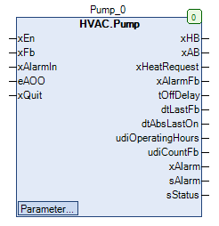

Pump (FB)¶
FUNCTION_BLOCK Pump
Kurzbeschreibung¶
Steuerung einer Umwälzpumpe mit Blockierschutzfunktion
Darstellung¶

Schnittstellen¶
Eingänge¶
Name Datentyp Wertebereich Initialwert Funktion xEn BOOL Anforderung der Umwälzpumpe xFb BOOL Betriebsmeldung der Umwälzpumpe xAlarmIn BOOL Störmeldung der Umwälzpumpe eAOO HVACTYPES.eManBin HVACTYPES.eManBin.Auto, HVACTYPES.eManBin.ManOff, HVACTYPES.eManBin.ManOn HVACTYPES.eManBin.Auto Betriebsart der Handübersteuerung - Hardware xQuit BOOL FALSE Rücksetzung der Störmeldung der Betriebsüberwachung
Ausgänge¶
Name Datentyp Wertebereich Initialwert Funktion xHB BOOL
FALSE: Hand-Ausgang: Umwälzpumpe nicht freigegeben TRUE: Hand-Ausgang: Umwälzpumpe freigegeben xAB BOOL
FALSE: Automatik-Ausgang: Umwälzpumpe nicht freigegeben TRUE: Automatik-Ausgang: Umwälzpumpe freigegeben xHeatRequest BOOL
FALSE: Anforderung-Wärmeerzeugung nicht freigegeben TRUE: Anforderung-Wärmeerzeugung freigegeben xAlarmFb BOOL
FALSE: Störmeldung-Betriebsüberwachung nicht freigegeben TRUE: Störmeldung-Betriebsüberwachung freigegeben tOffDelay TIME Restzeit des Nachlaufs der Umwälzpumpe dtLastFb DATE_AND_TIME Datum / Uhrzeit des letzten Betriebs der Umwälzpumpe dtAbsLastOn DATE_AND_TIME Datum / Uhrzeit des letzten Blockierschutzbetriebs udiOperatingHours UDINT Betriebsstunden der Umwälzpumpe udiCountFb UDINT Anzahl der Einschaltungen der Umwälzpumpe xAlarm BOOL
FALSE: Sammelstörmeldung nicht freigegeben TRUE: Sammelstörmeldung freigegeben sAlarm STRING
1: ‘UP Störung Hardware’ ( STO = TRUE ) 2: ‘UP Störung Betriebsüberwachung’ (STO_BE = TRUE ) sStatus STRING
1: ‘UP Störung Hardware’ 2: ‘UP Störung Betriebsüberwachung’ 3: ‘Ein über Automatik’ 4: ‘Aus über Automatik’ 5: ‘Ein über Hand Software’ 6: ‘Aus über Hand Software’ 7: ‘Ein über Hand Hardware’ 8: ‘Aus über Hand Hardware’
Sollwerte / Parameter¶
Name Datentyp Wertebereich Initialwert Funktion xAlarmControl BOOL FALSE
FALSE: xHb von xAlarm unabhängig TRUE: xHb wird bei xAlarm = TRUE gesperrt udiFbControlTime UDINT 0 ... 300s 60s Zeitdauer der Betriebsüberwachung xFbControl BOOL TRUE
FALSE: Betriebsüberwachung nicht freigegeben TRUE: Betriebsüberwachung freigegeben tAbsTime UDINT 0 ... 600s 120s Zeitdauer des Blockierschutzbetriebs tAbsTime TOD 00:00:00 - 23:59:59 Uhr 08:00:00 Uhr Zeitpunkt des Blockierschutzbetriebs eAbsDay eDoW eDoW.Monday ... eDoW.Sunday eDoW.Monday Wochentag des Blockierschutzbetriebs eOffDelayTimeBase eTime eTime.Second, eTime.Minute, eTime.Hour eTime.Second Skalierung der Nachlaufzeit ( Sekunden / Minuten / Stunden ) udiOffDelay UDINT 0 ... 60min 120s Nachlaufzeitdauer der Umwälzpumpe eManModeB eMANBIN eMANBIN.Auto, eMANBIN.ManOff, eMANBIN.ManOn eMANBIN.Auto Betriebsart der Handübersteuerung für den digitalen Ausgang xHB
Funktionsbeschreibung¶
Automatik-Ausgang xAB¶
Der digitale Automatik-Ausgang xAB wird durch den Eingang xEn, den Ausgang xAlarm, das Nachlaufmodul und das Blockierschutzmodul beeinflusst.
xEn xAlarm xAlarmControl Nachlaufmodul Blockierschutzmodul xAB Hinweise X TRUE TRUE X X FALSE Abschaltung über Sammelstörung freigegeben FALSE X FALSE FALSE FALSE FALSE Automatikbetrieb Aus TRUE x FALSe FALSe FALSE TRUE Automatikbetrieb Ein X X FALSe TRUE X TRUE Nachlaufbetrieb X x FALSE X TRUE TRUE Blockierschutzbetrieb
Legende: X = beliebig
Hand-Ausgang xHB¶
Der digitale Hand-Ausgang xHB entspricht dem digitalen Automatik-Ausgang xAB, zusätzlich erweitert um ein Handübersteuermodul.
xAB eMANBIN xHB Hinweise FALSE eMANBIN.Auto FALSE Handübersteuermodul in Automatik TRUE eMANBIN.Auto TRUE Handübersteuermodul in Automatik X eMANBIN.ManOn TRUE Handübersteuermodul in Handbetrieb Ein X eMANBIN.ManOff FALSE Handübersteuermodul in Handbetrieb Aus
Legende: X = beliebig
Anforderung - Wärmeerzeugung xHeatRequest¶
Der digitale Ausgang xHeatRequest wird durch den Eingang xFb, das Nachlaufmodul und das Blockierschutzmodul beeinflusst.
xFB Nachlaufmodul Blockierschutzmodul xHeatRequest Hinweise FALSE X X FALSE Umwälzpumpe ist nicht in Betrieb TRUE FALSE FALSE TRUE Umwälzpumpe ist in Betrieb TRUE TRUE X FALSE Nachlaufmodul ist in Betrieb TRUE X TRUE FALSE Blockierschutzmodul ist in Betrieb
Legende: X = beliebig
Nachlaufmodul¶
Das Nachlaufmodul wird durch eine Abschaltverzögerung mit einstellbarer Zeitdauer realisiert. Der Eingang des Nachlaufmoduls ist aktiv,
falls die Freigabe ‘xEn’ aktiv und gleichzeitig die Sammelstörmeldung xAlarm nicht aktiv ist.
Blockierschutzmodul¶
Das Blockierschutzmodul wird durch das binäre Blockierschutzmodul mit einstellbarer Zeitdauer realisiert.
Die Zeitdauer tAbsTime, der Zeitpunkt tAbsTime und der Wochentag eAbsDay sind einstellbar.
Der Zeitstempel (Datum / Uhrzeit) des letzten Blockierschutzbetriebs dtAbsLastOn steht zur Verfügung.
Ausgang xAlarm¶
xAlarmIn xAlarmFb xAlarm Hinweise FALSE FALSE FALSE Sammelstörung ist inaktiv TRUE FALSE TRUE Externe Hardwarestörung ist aktiv FALSe TRUE TRUE Störung der Betriebsüberwachung ist aktiv TRUE TRUE TRUE Beide Störungen sind aktiv
Legende: X = beliebig
Betriebsstundenzähler¶
Der Betriebsstundenzähler ist aktiv, falls die Umwälzpumpe in Betrieb ist (xFb = TRUE) und gleichzeitig die Sammelstörung xAlarm nicht aktiv ist (xAlarm = FALSE).
Die Anzahl der Betriebsstunden udiOperatingHours, und die Anzahl der Einschaltungen udiCountFb werden an den entsprechenden Ausgängen ausgegeben.
Der Zeitstempel (Datum / Uhrzeit) des Betriebs der Umwälzpumpe dtLastFb steht zur Verfügung.
Betriebsüberwachung¶
Die Betriebsüberwachung überwacht die korrekte Funktion der Umwälzpumpe.
Die Überwachung kann generell freigegeben (xFbControl = TRUE) oder gesperrt (xFbControl = FALSE) werden.
Der Automatikbetrieb der Umwälzpumpe muss ebenfalls aktiv sein ( eAOO = HVACTYPES.eManBin.Auto ).
Der Eingang xFb und der Ausgang xHB werden permanent miteinander verglichen. Sind die Zustände während einer
einstellbaren Zeitdauer udiFbControlTime stets ungleich (d.h. Freigabe der Pumpe aber keine Betriebsrückmeldung),
so wird die Störmeldung der Betriebsüberwachung xAlarmFb aktiviert.
Die Störmeldung der Betriebsüberwachung xAlarmFb wird zurück gesetzt, falls die Freigabe der Überwachung xFbControl
gesperrt ist, oder der Rücksetzeingang xQuit aktiv ist, oder der Automatikbetrieb der Umwälzpumpe ( eAOO = HVACTYPES.eManBin.Auto )
aktiviert wird.
Visualisierung¶
Information¶
Element Autoren Datum Version Anmerkungen Funktion Alexander Halter 04.2016 1.0 Ursprungsversion Programmierung Adam Bartod, Lukas Pfänder 04.2016 1.0 Ursprungsversion Test Alexander Halter 11.2017 1.0 Ursprungsversion Dokumentation Jochen Reu 11.2017 1.0 Ursprungsversion
Codesys¶
- InOut:
Scope Name Type Initial Comment Input xEn BOOL Anforderung der Umwälzpumpe xFb BOOL Betriebsmeldung der Umwälzpumpe xAlarmIn BOOL Störmeldung der Umwälzpumpe eAOO eManBin HVACTYPES.eManBin.Auto Betriebsart der Handübersteuerung - Hardware xQuit BOOL FALSE Rücksetzung der Störmeldung der Betriebsüberwachung Output xHB BOOL Freigabe der Umwälzpumpe ( Hand-Ausgang ) xAB BOOL Freigabe der Umwälzpumpe ( Automatik-Ausgang ) xHeatRequest BOOL Anforderung der Wärmeerzeugung xAlarmFb BOOL Störmeldung der Betriebsüberwachung tOffDelay TIME Restzeit des Nachlaufs der Umwälzpumpe dtLastFb DT Datum / Uhrzeit des letzten Betriebs der Umwälzpumpe dtAbsLastOn DT Datum / Uhrzeit des letzten Blockierschutzbetriebs udiOperatingHours UDINT Betriebsstunden der Umwälzpumpe udiCountFb UDINT Anzahl der Einschaltungen der Umwälzpumpe xAlarm BOOL Sammelstörung sAlarm STRING Meldungstexte für Störungen ( 1 = Höchste Priorität ) sStatus STRING Meldungstexte für den Betriebsstatus ( 1 = Höchste Priorität ) Input xAlarmControl BOOL FALSE Sperrung der Freigabe bei Störungen ? udiFbControlTime UDINT 60 Zeitdauer der Betriebsüberwachung xFbControl BOOL TRUE Freigabe der Betriebsüberwachung udiAbsTime UDINT 120 Zeitdauer des Blockierschutzbetriebs todAbsStartTime TOD TIME_OF_DAY#8:0 Zeitpunkt des Blockierschutzbetriebs eAbsDay eDoW eDow.Monday Wochentag des Blockierschutzbetriebs eOffDelayTimeBase eTime eTime.Second Skalierung der Nachlaufzeit ( Sekunden / Minuten / Stunden ) udiOffDelay UDINT 60 Nachlaufzeitdauer der Umwälzpumpe eManModeB eMANBIN eMANBIN.Auto Betriebsart der Handübersteuerung für den digitalen Ausgang xHB